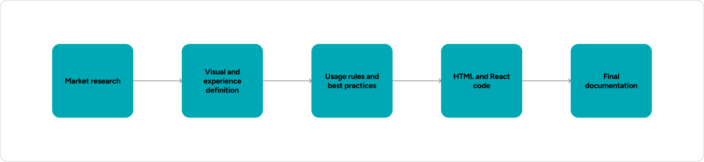
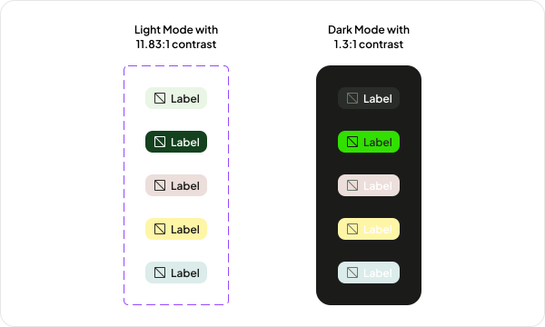
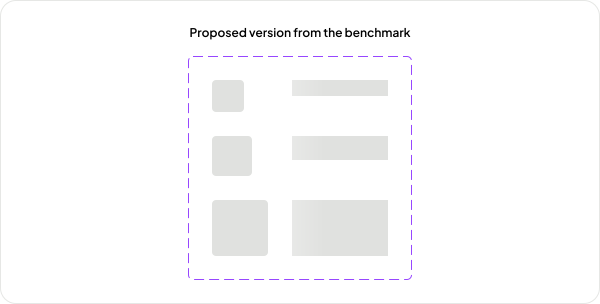
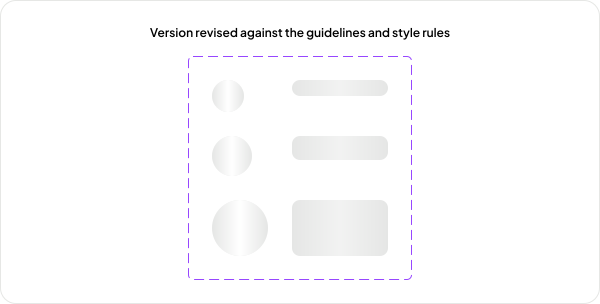
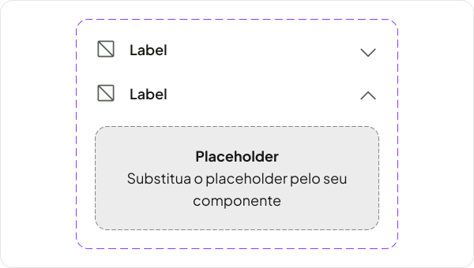
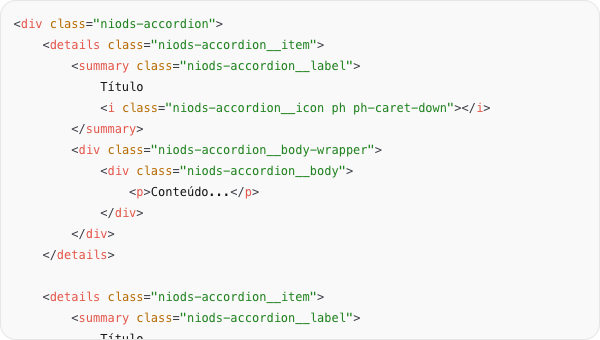
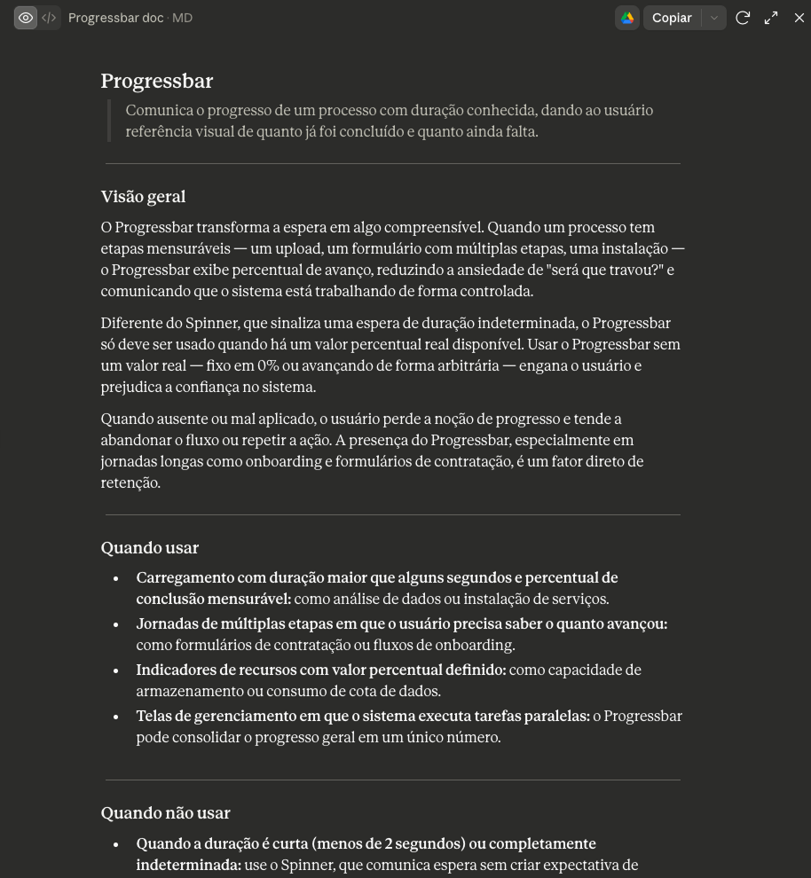
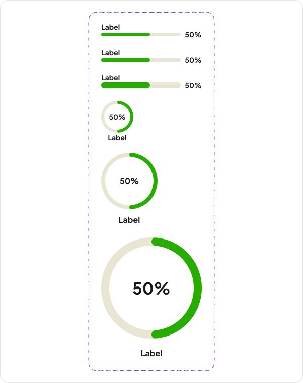
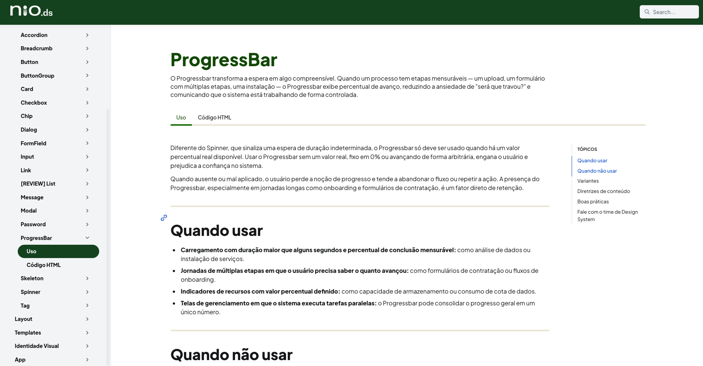

Building an AI agent workflow to create an entire design system, without compromising on quality
At Nio, a structural team constraint meant I was the only person responsible for NioDS - a multiplatform design system spanning Web and App (Android and iOS), built on principles of accessibility, responsiveness, and multiproduct support. Keeping all of that at the pace the teams needed was unfeasible for one person relying on so many manual processes.
- Product teams5
- PlatformsWeb · Android · iOS
- PrincipleMultiproduct
Creating a component took 1 to 2 days
Every component went through the entire process manually: researching references, defining usage rules and specs, validating accessibility, writing HTML and React code to test, drafting initial documentation, and reviewing every artifact to ensure consistency. All of it took 1 to 2 days depending on the component's complexity.

I turned the process into an AI agent workflow
Each step became a specialized agent that carries out the manual task. Between one step and the next there's a validation gate. Nothing moves forward without review and approval. Automation took over the execution of the operational process. The architecture and the design review are still done by a person.
The agents execute
- Benchmark research across reference design systems
- UX drafts, visual specs, and tokens
- Contrast checks and accessibility requirements
- HTML/CSS and React code
- Terminology, copy, and documentation
I decide
- The token architecture and the component contracts
- What meets the system's principles and what doesn't
- What gets approved and what goes back for rework
- The solutions the machine can't reach on its own
- How a one-off fix becomes a system-level decision
Evolving consistently, with no band-aid fixes
The accessibility agent flagged issues with the Tag component. Text and icon didn't meet the minimum AAA contrast. The fix wasn't to swap in whatever color happened to pass. It was to create two new tokens, always-dark and always-light, that solved the Tag and went on to serve other components. The agent surfaced the problem. The token architecture decision was mine.

It followed the references but strayed from the principles.
The first Skeleton proposal followed the benchmark, but it introduced animations and styles that fell outside the standards already defined for the system. I rejected it and sent the agents back to run again, now with a new direction. The agents follow the design criteria defined in the project, not just the external reference. That's what separates a production line from blind automation.


Accessibility without technical complexity
The NioDS style guide is focused on HTML and CSS, without relying on JavaScript. The Accordion is where that weighs most. The first solution used the checkbox hack, but it brought semantic and accessibility problems. The final decision was to use native details and summary - accessible by default, keyboard-operable, and JavaScript-free. The agents helped reach that solution by testing the alternatives against the accessibility principles.


Ready-to-use materials



9
Orchestrated steps, each with a specialized agent and a validation gate
Principles
Accessibility, responsiveness, code consistency and everything followed a standard.
< 2h
From 1 to 2 days of manual work to under 2 hours end to end